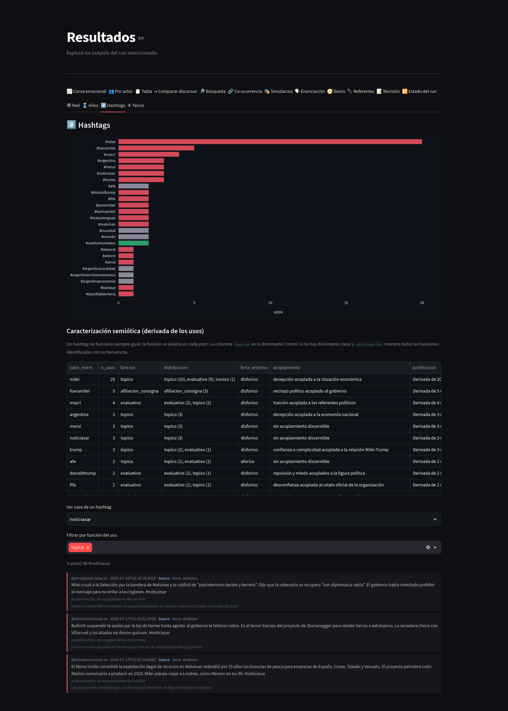
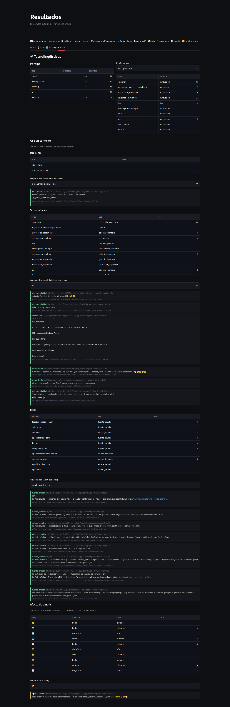
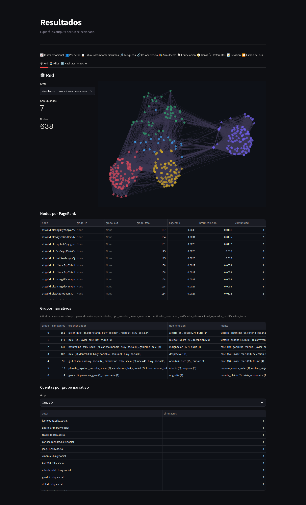

Posts y redes
Un post de red social es un enunciado que existe dentro de un dispositivo.
Sus etiquetas, menciones, emojis y mayúsculas sostenidas son materia del análisis, y la plataforma
misma define buena parte de la situación de enunciación. El género tuit trabaja con esas
condiciones en lugar de limpiarlas.
Otra vez lo mismo @ministeriomención. BASTAmayúsculas de anuncios vacíos #tarifazoetiqueta 🤬
- Uso de la mención
- confrontar
- Uso de las mayúsculas
- grito de indignación
- Función de la etiqueta
- evaluativa (nombra y condena a la vez)
- Aporte del emoji
- indignación, foria disfórica
- Quién habla
- la cuenta autora, sin inferencia
1Un post no es un texto plano
En un discurso presidencial, quién habla y a quiénes se dirige hay que reconstruirlo desde el texto. En un post, buena parte de esa escena viene dada: quien habla es la cuenta que publica, el público se arma con quienes la siguen, hay un destinatario por cada cuenta mencionada y un público por cada etiqueta usada. El sistema aprovecha esa información en lugar de deducirla, lo que hace la revisión de esa parte del análisis bastante más liviana.
A cambio aparecen capas que un discurso tradicional no tiene: las marcas propias del dispositivo, la estructura de los hilos con sus respuestas y sus citas, las imágenes adjuntas, y la red de vínculos entre las cuentas.
El principio del subsistema es anotar sin borrar. El texto del post nunca se modifica; cada elemento se extrae con su posición exacta y se guarda aparte.
2Qué se extrae
Un primer paso, technoparse, recorre cada post y separa sus elementos, sin usar
ningún modelo de lenguaje y sin alterar el texto original.
| Elemento | Qué se registra |
|---|---|
| Etiquetas (hashtags) | La forma y su función en la oración: integrada a la sintaxis o pospuesta como rótulo al final. |
| Menciones (@cuenta) | La cuenta referida y su posición, vocativa o integrada. Cada mención da de alta un referente con vínculo ya aceptado. |
| Enlaces | La dirección y el dominio al que apunta. |
| Emojis | El emoji, incluidas las secuencias compuestas de varios símbolos. |
| Tecnografismos | Mayúsculas sostenidas, alargamientos de letras, risas escritas, puntuación expresiva. |
Que las menciones den de alta referentes antes de cualquier inferencia tiene un efecto práctico: la base de actores del corpus arranca poblada con identificadores que son únicos por definición, y eso reduce el trabajo de unificación posterior.
3La escena que arma la plataforma
Quien habla es la cuenta autora del post, tomada de su identificador único. Funciona igual con corpus anonimizados, porque el alias se deriva de ese identificador y se mantiene estable a lo largo de todo el corpus.
El público se construye sin inferencia: quienes siguen a la cuenta, un público por cada etiqueta presente y un destinatario directo por cada cuenta mencionada. Los roles de destinatario, en cambio, dependen del tipo de discurso que se identifique en cada post, y ese tipo se toma de un vocabulario cerrado.
| Tipo de post | Posiciones de destinatario propias del tipo |
|---|---|
| Político | quien comparte las creencias, el indeciso a persuadir, el adversario |
| Periodístico | el lector ciudadano, el segmento al que apunta la estrategia editorial, el actor citado o etiquetado |
| Institucional | el ciudadano usuario, la comunidad interna, la instancia ante la que se rinde cuentas |
| Humor o meme | la comunidad que comparte el sentido, quien queda afuera del chiste, el blanco de la burla |
| Personal | el círculo afectivo, uno mismo, el testigo indeseado |
| Promocional | el destinatario buscado, la comunidad de marca, quien amplifica o recomienda |
A esos roles se suman dos posiciones presentes en cualquier post, porque son propiedades del dispositivo y no del tipo de discurso. Una es el destinatario mencionado, la interpelación explícita mediante una arroba. La otra es la audiencia ambiente: el público difuso e imaginado que resulta inevitable cuando la plataforma reúne, en un mismo lugar, audiencias que en otro contexto estarían separadas.
4Citar y repostear
Cuando un post retoma otro, hace algo con él. La etapa reframing clasifica esa
operación mirando el comentario de quien cita y su relación con lo citado: puede haber adhesión,
ironía que toma distancia, denuncia, o difusión sin toma de posición.
Por separado se registra el estatuto de las emociones que aparecen en lo citado. Pueden estar asumidas, cuando quien cita las hace propias, o exhibidas sin experimentarlas, que es el caso típico de la denuncia y de la ironía. La distinción evita atribuirle a quien denuncia la euforia que está exhibiendo para condenarla.
5Emojis y etiquetas
Un emoji no porta un afecto fijo. El sistema parte de los valores típicos de cada uno, que están en una lista curada , pero decide siempre por el contexto: una carcajada sobre una desgracia ajena celebrada es burla del lado desagradable, y sobre una anécdota propia es risa del lado agradable. La ironía invierte los valores, y un emoji meramente ilustrativo, una calabaza junto a una receta, no aporta ningún afecto. La repetición intensifica sin cambiar el tipo.
La etapa emoji_affect resuelve los emojis inequívocos con la lista, sin consumir
tiempo de modelo. Solo los ambiguos van al análisis en contexto.
Las etiquetas funcionan a la vez como segmento del enunciado y como operador de indexación:
proyectan el post hacia un archivo buscable y pueden construir comunión alrededor de valores. La
etapa hashtag_semiotics las caracteriza en cada uso, porque su funcionamiento cambia
de un post a otro.
| Función | Qué hace la etiqueta |
|---|---|
| Tópico | Indexa un tema sin evaluarlo. |
| Afiliación | Construye comunión alrededor de una causa; usarla es sumarse. |
| Evaluativa | Porta una valoración sobre su objeto. «#tarifazo» nombra y condena a la vez. |
| Irónica | Invierte el valor de aquello que nombra. |
| Campaña | Forma parte de una acción coordinada. |
De cada uso se registran además el acoplamiento, es decir qué valoración queda ligada a qué objeto en ese post, y la orientación de valor del entorno. La caracterización general de una etiqueta se deriva después por agregación de todos sus usos, con la distribución completa a la vista, así que una etiqueta que admite posts de valoraciones opuestas queda registrada como tópico y no como evaluativa.

6Para qué se usa cada marca
Ni el tipo de elemento ni su posición en la oración deciden su función. La etapa
tecno_usage caracteriza el uso de cada mención, cada tecnografismo y cada enlace
dentro del post donde aparece, y cita el post para justificarlo.
- Una mención puede interpelar, confrontar, exponer a la cuenta ante terceros, citarla, agradecerle, convocarla o marcar afiliación con ella.
- Unas mayúsculas sostenidas pueden ser grito de indignación, celebración, énfasis neutro, o un simple rótulo temático, la volanta del titular trasladada al post.
- Unos puntos suspensivos pueden insinuar o expresar incredulidad; una risa escrita puede ser complicidad o burla, según haya o no alguien a quien se ridiculiza.
- Un enlace puede funcionar como fuente y prueba, como autopromoción, como convocatoria o como enlace temático.

7Las imágenes
La etapa opcional vision_describe describe las imágenes adjuntas: qué muestran,
qué texto se lee en ellas, de qué tipo son, si se trata de una plantilla de meme o de una captura de
otro post. Esa descripción entra después como contexto del análisis emocional, así que el post se
analiza como un enunciado compuesto de texto e imagen. Requiere un modelo capaz de leer imágenes,
que se configura aparte.
8Las redes entre cuentas
El análisis de redes corre después del análisis emocional y no usa modelos de lenguaje. Su costo solo reside en las consultas a la plataforma.
Los grafos
Un grafo es un conjunto de puntos unidos por líneas. Acá los puntos son cuentas y las líneas son vínculos entre ellas: quién responde a quién, quién menciona a quién, quién repostea o cita a quién, y qué cuentas usan las mismas etiquetas. Con esos vínculos, el sistema calcula dos cosas.
Por un lado, qué cuentas ocupan posiciones centrales en la conversación, con medidas estándar del área: cuántos vínculos tiene cada cuenta, cuán importantes son quienes la señalan, y con qué frecuencia una cuenta queda en el camino más corto entre otras dos.1 Por otro, qué comunidades de cuentas se forman, entendidas como zonas donde los vínculos son mucho más densos hacia adentro que hacia afuera. Opcionalmente se reportan también los grupos donde todas las cuentas se vinculan entre sí, que son una figura distinta de la comunidad.
Quién sigue a quién
El seguimiento vive en la plataforma y no en los posts, así que se consulta aparte, en un paso que se corre una vez y que se puede interrumpir y retomar. El sistema pregunta a quién sigue cada cuenta del corpus y conserva los vínculos internos al corpus. Es una foto del momento de la consulta.2
Circulación de las emociones
Los vínculos entre cuentas se cruzan después con el análisis emocional. El sistema informa el perfil emocional de cada comunidad, y una matriz que muestra con qué orientación de valor se responde a cada orientación de valor: si la disforia escala, si contagia, o si se le responde con ironía del lado agradable.
Un análisis adicional mide el contagio por tipo de emoción, es decir cuánto se replica cada tipo en las respuestas por encima de lo que su frecuencia haría esperar,3 y parte la matriz en dos: lo que pasa puertas adentro de una comunidad y lo que pasa en el cruce entre comunidades.
Agrupar por parecido
Dos agrupamientos más no dependen de que el corpus sea de posts, así que también sirven para corpus de discursos tradicionales. Uno agrupa las emociones reconstruidas por parecido entre sus componentes: mismo tipo de experienciador, mismo tipo de emoción, misma clase de fuente. Permite encontrar qué fragmentos del corpus cuentan, en ese sentido, la misma historia emocional. El otro agrupa los textos por parecido de contenido.4

Todo el análisis se explora en el tablero y se exporta a archivos abiertos, listos para trabajar en programas especializados en redes.
9Conseguir el corpus
El sistema adquiere posts de Bluesky y de Mastodon, importa volcados de datos ya publicados en formatos de tabla o de texto estructurado, y admite la interfaz oficial de X, que requiere plan pago. La adquisición es incremental: si se interrumpe, retoma donde estaba y no duplica lo que ya tenía.
Se puede pedir además que descargue las imágenes adjuntas, que complete el perfil de cada cuenta autora, o que restrinja la adquisición a conversaciones con un mínimo de posts, expandiendo el hilo completo de cada una.
Una opción reemplaza los identificadores de cuenta por alias estables derivados de una clave local, y borra la biografía, el nombre visible y los datos originales. La estructura de los hilos y de las redes se preserva, así que el análisis relacional sigue siendo posible sobre un corpus anonimizado. Las consideraciones éticas y los límites del procedimiento están documentados en el repositorio.
Notas
- Grado, PageRank e intermediación. El cálculo de intermediación se limita a redes de hasta dos mil cuentas, porque su costo crece rápido con el tamaño. La detección de comunidades usa el algoritmo de Louvain con semilla fija, de modo que dos corridas sobre el mismo material dan el mismo resultado. ↩
- Se consulta solo a quién sigue cada cuenta, nunca quién la sigue. El vínculo entre dos cuentas se captura igual desde cualquiera de los dos lados, y una cuenta sigue a cientos mientras puede tener cientos de miles de seguidores. ↩
- La medida es el lift: un valor mayor que uno indica que ese tipo de emoción aparece en las respuestas más de lo que se esperaría por su sola frecuencia en el corpus. ↩
- El parecido de contenido se calcula con representaciones numéricas del texto, que ubican cada post en un espacio donde la cercanía corresponde a la afinidad temática. Requiere una biblioteca adicional, pesada; el agrupamiento por parecido entre emociones reconstruidas funciona sin ella. ↩